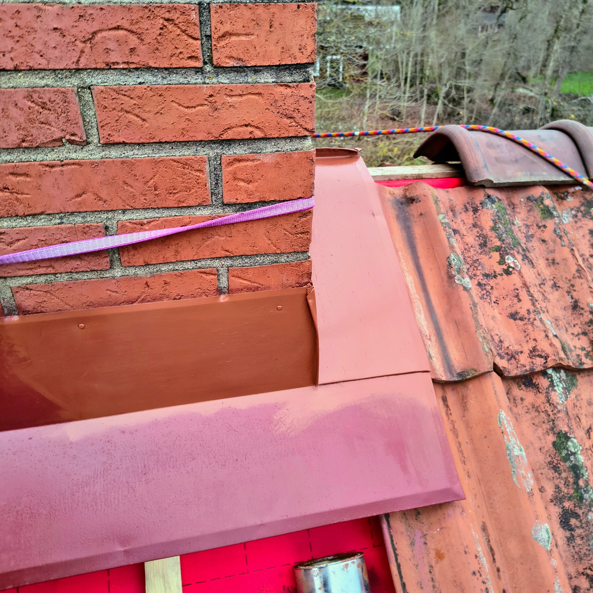
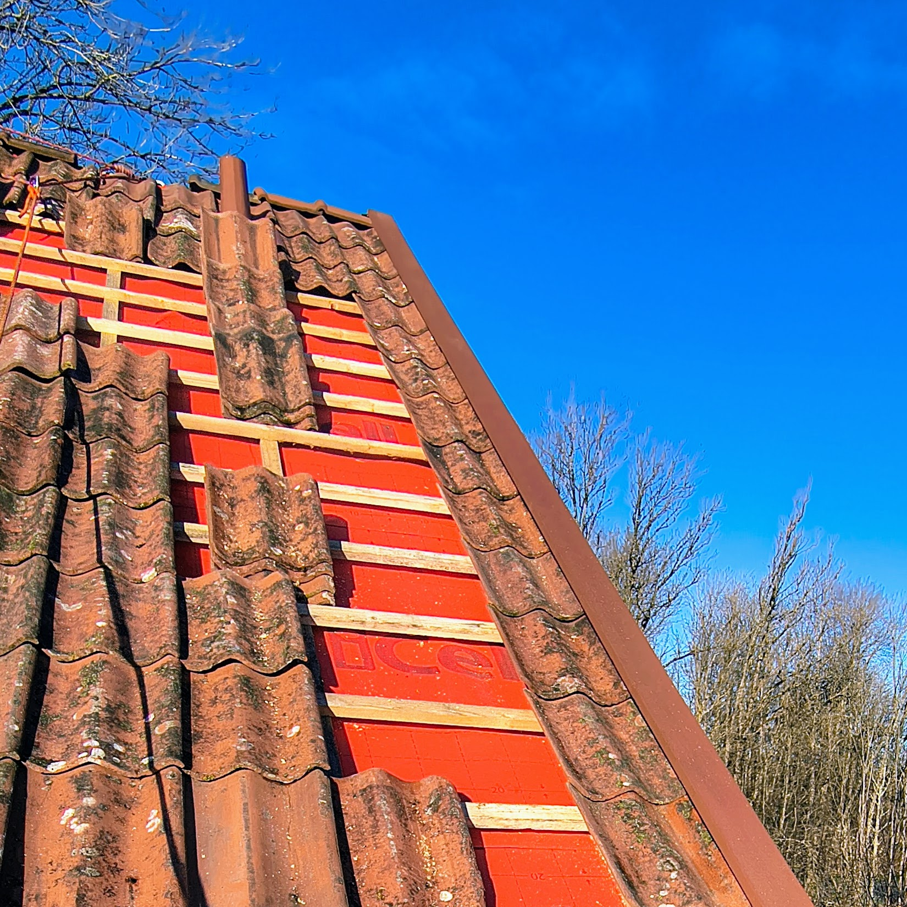

dc <- 2.02/2.7 # diffraktionskvot zinkoxid/titandioxid (konstant)
cp <- 0.12 # färgandel
zp <- 0.3 # zinkandel; 0.3 utomhus; 0.15 inomhus om kulören tillåter
#wp <- 1-0.12 # vitandel (räknas ut)
#tp <- 1-0.3 # titandel (räknas ut)
ca = (1-zp)*((1-cp)*zp*2.02/2.7+(1-cp)*(1-zp)) # mängd färgpigment
#ca = 0.098
#za = 0.88*0.3
#ta = 0.88*0.7
#CPVC ≈ 100 / (1 + oljetal/100 × 0,93 / densitet_pigment)
oljetal <- list(
titandioxid=c(20,4.23),
zinkoxid=c(15,5.60),
jarnoxid_svart=22,
jarnoxid_rod=27,
jarnoxid_gul=c(35,4.0),
jarnmonja=c(25,5.2),
umbra_gron=c(45,2.60),
kromoxid_gron=c(18,5.2),
krita=c(18,2.71)
)5 Färgtillverkning
Följande dokumenterar recepten för de egenblandade färger som tillverkats och använts på Karlslund från 2025 och framåt. Recepten utgår från de olika ingrediensernas egenskaper (oljetal, opacitet med mera) och är skapade för att vara enkla att reproducera med enhetligt resultat. De kan med fördel justeras med valfri mängd extra linolja eller annat förekommande bindmedel, utifrån behov och önskemål.
5.1 Utomhus
5.1.1 Rostskyddsfärg till takplåt och järnstege
Takstegen, avloppsventilationsstosen och plåtkragningen kring skorstenen målades i oktober 2025 med följande grundfärg i 2 strykningar.
- 1 del (vikt; 50 g i första batchen) zinkoxid (Kremer Pigmente, 2025a)
- 2 delar Järnmönja (Claessons träjära, 2025)
- 3 delar kokt linolja (Boställets lin, 2025)
Instruktion: Pigmenten läggs att väta i linolja över natten. Blandningen rivs sedan noga med färgblandare (Allbäck Linoljeprodukter, 2025) i borrmaskin.
5.1.2 Slutstrykningsfärg till plåt och järn
Takstegen, avloppsventilationsstosen och plåtkragningen kring skorstenen målades i oktober 2025 med följande grundfärg i 1–2 strykningar, för att efterlikna takteglets kulör.
- 1 del (vikt; 50 g i första batchen) zinkoxid (Kremer Pigmente, 2025a)
- 1 del Järnmönja (Claessons träjära, 2025)
- 1 del Gul järnoxid (Kremer Pigmente, 2025b)
- 3 delar kokt linolja (Boställets lin, 2025)
Instruktion: Pigmenten läggs att väta i linolja över natten. Blandningen rivs sedan noga med färgblandare (Allbäck Linoljeprodukter, 2025) i borrmaskin.
5.1.3 Roslagsmahogny/tjäroljefärg till vattbrädor tak
Vattbrädorna i trä målades i oktober 2025 med nedanstående pigmenterade roslagsmahogny i 1 första strykning för att efterlikna takteglets kulör, och harmoniera med linoljefärgen på takets plåtbeslag.
- 1 del (vikt; 75 g i första batchen) zinkoxid (Kremer Pigmente, 2025a)
- 1 del Järnmönja (Claessons träjära, 2025)
- 1 del Gul järnoxid (Kremer Pigmente, 2025b)
- 1 del kokt linolja (Boställets lin, 2025)
- 1 del äkta trätjära (Biltema, 2025a)
- 1 del balsamterpentin (Biltema, 2025b)
Instruktion: Bindmedel och terpenting blandas först, varpå pigmenten läggs i att väta. Blandningen blandas sedan noga med färgblandare (Allbäck Linoljeprodukter, 2025) i borrmaskin.
5.1.4 Roslagsmahogny/tjäroljefärg till uthusdörrar
En färgblandning bereddes vintern 2025 med nedanstående pigmenterade roslagsmahogny till uthusens dörrar.
- 1 del (vikt; 75 g i första batchen) zinkoxid (Kremer Pigmente, 2025a)
- 2 delar Gul järnoxid (Kremer Pigmente, 2025b)
- 1 del kokt linolja (Boställets lin, 2025)
- 1 del äkta trätjära (Biltema, 2025a)
- 1 del balsamterpentin (Biltema, 2025b)
Instruktion: Bindmedel och terpenting blandas först, varpå pigmenten läggs i att väta. Blandningen blandas sedan noga med färgblandare (Allbäck Linoljeprodukter, 2025) i borrmaskin.
5.2 Grundfärg för impregnering och skydd mot mögelpåväxt
Vintern 2025 bereddes impregnerande grundfärg för tidigare omålat trä utomhus, enligt följande recept.
- 1 del (vikt; 500 g i första batchen) zinkvitt (Kremer Pigmente, 2025a)
- 1 del kokt linolja
Instruktion: Pigmenten läggs att väta i linolja över natten. Blandningen rivs sedan noga med färgblandare (Allbäck Linoljeprodukter, 2025) i borrmaskin.
5.2.1 Linoljefärg vit 12% grön umbra (pasta)
Vintern 2025 bereddes en varmgrå linoljefärgspasta, med 12 % grön umbra i vitt, för användning på vindskivor och knutar på boningshuset. Pastan, som innehåller en större mängd zinkoxid för att motverka mögelpåväxt, används gärna direkt för den första inarbetningen i underlaget, med med ökande tillsats kokt linolja i mellan- och slutstrykningen, utifrån principen “fett över magert”. För ökad glans kan sista strykningen innehålla upp till 5 % soloxiderad linolja.
- 110 g grön umbra (Kremer Pigmente, 2025c)
- 700 g titandioxid (Kremer Pigmente, 2025d)
- 300 g zinkvitt (Kremer Pigmente, 2025a)
- ? g kokt linolja
| Pigment | Densitet (g/cm³) | Oljetal (g olja / 100 g pigment) | Brytningsindex (n) |
|---|---|---|---|
| Zinkvitt (ZnO) Kremer Pigmente (2023k) | 5,60 | 18–22 | 2.01 (opakt) |
| Titanvitt rutil (TiO₂, PW 6) Kremer Pigmente (2023i) | 4,23 (typ. 3,4–4,3) | 18,7 | 2.71 (mycket opakt) |
| Champagne-krita (CaCO₃, PW 18) Kremer Pigmente (2023a) | 2,71 | 17 | 1.49–1.66 (transparent) |
5.2.2 Gula / ockror
| Pigment | Densitet (g/cm³) | Oljetal (g olja / 100 g pigment) | Brytningsindex (n) |
|---|---|---|---|
| Ljus ockra italiensk (PY 43) Kremer Pigmente (2025r) | 3,0–3,4 | 25–35 | 2.0–2.4 (transparent–semitransp.) |
| Guldockra (PY 43) Kremer Pigmente (2025m) | 3,2–3,6 | 30–40 | 2.1–2.5 (semitransparent) |
| Rå ockra mörk (PY 43) Kremer Pigmente (2025l) | 3,4 | 35–45 | 2.0–2.4 (transparent–semitransp.) |
| Järnoxidgul 930 mörk (Majsgul, PY 42) Kremer Pigmente (2018) | 4,0 | 60 | 2.66 (opakt) |
5.2.3 Orange / rå siennor
| Pigment | Densitet (g/cm³) | Oljetal (g olja / 100 g pigment) | Brytningsindex (n) |
|---|---|---|---|
| Rå sienna italiensk (PBr 7) Kremer Pigmente (2025t) | 2,8–3,2 | 35–45 | 1.8–2.3 (transparent–semitransp.) |
| Rå sienna mörk (PBr 7) Kremer Pigmente (2025s) | 2,9 | 40–50 | 1.8–2.2 (transparent) |
| Translucent orange-röd (PR 101) Kremer Pigmente (2025w) | 5,2 | 15–20 | 2.4–2.8 (semitransparent) |
5.2.4 Röda / brända siennor & järnoxider
| Pigment | Densitet (g/cm³) | Oljetal (g olja / 100 g pigment) | Brytningsindex (n) |
|---|---|---|---|
| Järnoxidröd 110 M, ljus (PR 101) Kremer Pigmente (2023e) | 5,2 | 28 | 3.01 (opakt) |
| Järnoxidröd 120 M (PR 101) Kremer Pigmente (2023f) | 5,2 | 28 | 3.01 (opakt) |
| Järnoxidröd 130 B, medel (PR 101) Kremer Pigmente (2023g) | 5,2 | 26 | 3.01 (opakt) |
| Järnoxidröd 130 M, medel (PR 101) Kremer Pigmente (2025n) | 5,2 | 25–30 | 3.01 (opakt) |
| Translucent röd medel (PR 101) Kremer Pigmente (2025x) | 5,2 | 18–22 | 2.4–2.8 (semitransparent) |
| Bränd sienna italiensk (PBr 7) Kremer Pigmente (2025h) | 3,3–3,7 | 30–40 | 2.3–2.6 (semitransparent) |
| Bränd sienna rödaktig (PBr 7) Kremer Pigmente (2025i) | 3,5 | 35 | 2.4–2.7 (semitransparent) |
| Bränd ockra (PR 102) Kremer Pigmente (2025g) | 4,0 | 25–35 | 2.5–2.8 (semitransparent) |
| Venetiansk röd natur (PR 102) Kremer Pigmente (2023j) | 5,2 | 25–30 | 2.9–3.1 (semitransparent) |
| Engelsk röd ljus natur (PR 102) Kremer Pigmente (2023c) | 5,2 | 28–32 | 2.9–3.1 (semitransparent) |
| Järnmönja 406 (röd järnoxid) Claessons Färg (2024) | 5,2 (4,9–5,3) | 15–25 | 3.01 (opakt) |
| Järnoxidröd 160 M (PR 101) Kremer Pigmente (2025o) | 5,2 | 24–28 | 3.01 (opakt) |
| Järnoxidröd 222, mörk (PR 101) Kremer Pigmente (2025p) | 5,2 | 20–25 | 3.01 (opakt) |
| Caput Mortuum syntetisk 180 M, blåaktig (PR 101) Kremer Pigmente (2025j) | 5,2 | 22–26 | 3.01 (opakt) |
| Järnoxidröd, mikroniserad (PR 101) Kremer Pigmente (2023h) | 5,2 | 30–35 | 3.01 (opakt) |
| Järnoxidröd natur (PR 101) Kremer Pigmente (2025q) | ~5,0 | 38 | 2.9–3.1 (semitransparent–opakt) |
| Hematit, mycket intensiv (PR 102) Kremer Pigmente (2023d) | 5,2 | 22 (±1) | 2.9–3.1 (semitransparent) |
| Svensk röd ockra (Falun-inspirerad) Kremer Pigmente (2025v) | ~3,8 | 20–30 | 2.7–3.0 (semitransparent–opakt) |
5.2.5 Bruna / umber
| Pigment | Densitet (g/cm³) | Oljetal (g olja / 100 g pigment) | Brytningsindex (n) |
|---|---|---|---|
| Råumber grönaktig mörk (PBr 7) Kremer Pigmente (2025u) | 2,60 | 64 | 1.7–2.0 (semitransparent) |
| Cypriotisk umber mörk (PBr 7) Kremer Pigmente (2025k) | 2,9 | 55–65 | 1.7–2.0 (transparent–semitransp.) |
5.2.6 Gröna
| Pigment | Densitet (g/cm³) | Oljetal (g olja / 100 g pigment) | Brytningsindex (n) |
|---|---|---|---|
| Grön jord Böhmisk (PG 23) Kremer Pigmente (2025f) | 2,7–3,0 | 40–60 | 1.60–1.65 (mycket transparent) |
| Veroneser grön jord (PG 23) Kremer Pigmente (2025y) | 2,8 | 50–70 | 1.60–1.64 (mycket transparent) |
| Kromoxidgrön (Cr₂O₃, PG 17) Kremer Pigmente (2023b) | ~5,2 | ~11 | 2.50 (opakt) |
5.3 Inomhus
5.3.1 Linoljefärg vit 3% grön umbra (pasta)
Vintern 2025 bereddes en vit linoljefärgspasta, med aningen grön umbra för att balansera linoljans svaga gulton, att använda på snickerier, inklusive socklar och foder, liksom gjutjärnsradiatorer. Pastan används gärna direkt för den första inarbetningen i underlaget, med med ökande tillsats kokt linolja i mellan- och slutstrykningen. För ökad glans kan sista strykningen innehålla upp till 5 % soloxiderad linolja.
- 30 g grön umbra (Kremer Pigmente, 2025c)
- 850 g titandioxid (Kremer Pigmente, 2025d)
- 150 g zinkvitt (Kremer Pigmente, 2025a)
- ? g kokt linolja
Instruktion: Pigmenten läggs att väta i linolja över natten. Den tjocka blandningen rivs sedan mycket noga med färgblandare (Allbäck Linoljeprodukter, 2025) i borrmaskin. Ovan angiven mängd bereds och förvaras med fördel i en 1-liters färgburk i plåt (Bauhaus, 2025).
5.3.2 Äggoljetempera ljusgul väggfärg
Vinyltapeten från 1980-talet i ett av sovrummen målades hösten 2025, som en “snabbrenovering”, med följande färg i 2 strykningar.
- 1 del (vikt; 50 g) Gul järnoxid (Kremer Pigmente, 2025b)
- 10 delar krita (Kremer Pigmente, 2025e)
- 15 delar titandioxid (Kremer Pigmente, 2025d)
- 25 delar vatten
- 10 delar ägg
- 10 delar kokt linolja
Instruktion: Pigmenten läggs att väta i vatten i ett kärl över natten. Pigmentpastan mixas därefter med stavmixer. Ägg och olja mixas samman i ett separat kärl och hälls sedan ned i pigmentpastan. Färgen justeras med valfri mängd vatten till underlaget och önskad känsla i pensel/roller.
Allbäck Linoljeprodukter. (2025). Färgblandaren Hans – metall. https://linoljeprodukter.se/verktyg/fargblandaren-hans-metall/
Bauhaus. (2025). Tomburk Beckers plåt 1 liter. https://www.bauhaus.se/tomburk-beckers-plat-1-l
Biltema. (2025a). https://www.biltema.se/bygg/farg/utomhusfarg/asfalt/akta-tratjara-1-liter-2000053045
Biltema. (2025b). https://www.biltema.se/bygg/farg/rengoringsmedel/balsamterpentin-1-liter-2000063842
Boställets lin. (2025). Kallpressad kokt linolja. https://bostalletslin.se/produkt/kallpressad-kokt-linolja/
Claessons Färg. (2024). Järnmönja 406 – Red Iron Oxide Pigment. https://claessons.com/roda/jarnmonja-406/
Claessons träjära. (2025). https://claessons.com/roda/jarnmonja-406/
Kremer Pigmente. (2018). Iron Oxide Yellow 930, dark (PY 42) – Safety Data Sheet. https://www.kremer-pigmente.com/elements/resources/products/files/48045_SDS.pdf
Kremer Pigmente. (2023a). Chalk from Champagne (PW 18) – Safety Data Sheet. https://www.kremer-pigmente.com/media/pdf/58000_SDS.pdf
Kremer Pigmente. (2023b). Chrome Oxide Green (PG 17) – Safety Data Sheet. https://www.kremer-pigmente.com/elements/resources/products/files/44200_SDS.pdf
Kremer Pigmente. (2023c). English Red Light natural (PR 102) – Safety Data Sheet. https://www.kremer-pigmente.com/media/pdf/40542_SDS.pdf
Kremer Pigmente. (2023d). Haematite, very intensive (PR 102) – Safety Data Sheet. https://www.kremer-pigmente.com/elements/resources/products/files/48651_SDS.pdf
Kremer Pigmente. (2023e). Iron Oxide Red 110 M, light (PR 101) – Safety Data Sheet. https://www.kremer-pigmente.com/elements/resources/products/files/48100_SDS.pdf
Kremer Pigmente. (2023f). Iron Oxide Red 120 M (PR 101) – Safety Data Sheet. https://www.kremer-pigmente.com/elements/resources/products/files/48120_SDS.pdf
Kremer Pigmente. (2023g). Iron Oxide Red 130 B, medium (PR 101) – Safety Data Sheet. https://www.kremer-pigmente.com/elements/resources/products/files/48150_SDS.pdf
Kremer Pigmente. (2023h). Iron Oxide Red, micronized (PR 101) – Safety Data Sheet. https://www.kremer-pigmente.com/elements/resources/products/files/48289_SDS.pdf
Kremer Pigmente. (2023i). Titanium White Rutile (PW 6) – Safety Data Sheet. https://www.kremer-pigmente.com/media/pdf/46200_SDS.pdf
Kremer Pigmente. (2023j). Venetian Red natural (PR 102) – Safety Data Sheet. https://www.kremer-pigmente.com/media/pdf/40510_SDS.pdf
Kremer Pigmente. (2023k). Zinc White (PW 4) – Safety Data Sheet. https://www.kremer-pigmente.com/elements/resources/products/files/46300_SDS.pdf
Kremer Pigmente. (2025a). https://www.kremer-pigmente.com/en/shop/pigments/46300-zinc-white.html
Kremer Pigmente. (2025b). https://www.kremer-pigmente.com/en/shop/pigments/iron-oxide-pigments/48001-iron-oxide-yellow-maize-yellow.html
Kremer Pigmente. (2025e). https://www.kremer-pigmente.com/en/shop/fillers-building-materials/58000-chalk-from-champagne.html
Kremer Pigmente. (2025d). https://www.kremer-pigmente.com/en/shop/pigments/pigments-of-modern-age/46200-titanium-white-rutile.html
Kremer Pigmente. (2025c). https://www.kremer-pigmente.com/en/shop/pigments/40612-raw-umber-greenish-dark.html
Kremer Pigmente. (2025f). Bohemian Green Earth (PG 23). https://www.kremer-pigmente.com/en/shop/pigments/40710-bohemian-green-earth.html
Kremer Pigmente. (2025g). Burnt Ochre (PR 102). https://www.kremer-pigmente.com/en/shop/pigments/40300-burnt-ochre.html
Kremer Pigmente. (2025h). Burnt Sienna Italy (PBr 7). https://www.kremer-pigmente.com/en/shop/pigments/40420-burnt-sienna-italy.html
Kremer Pigmente. (2025i). Burnt Sienna Reddish (PBr 7). https://www.kremer-pigmente.com/en/shop/pigments/40430-burnt-sienna-reddish.html
Kremer Pigmente. (2025j). Caput Mortuum Synthetic 180 M, bluish (PR 101). https://www.kremer-pigmente.com/en/shop/pigments/48220-caput-mortuum-synthetic-180-m.html
Kremer Pigmente. (2025k). Cyprian Umber Dark (PBr 7). https://www.kremer-pigmente.com/en/shop/pigments/40640-cyprian-umber-dark.html
Kremer Pigmente. (2025l). Dark Ochre (PY 43). https://www.kremer-pigmente.com/en/shop/pigments/40290-dark-ochre.html
Kremer Pigmente. (2025m). Gold Ochre (PY 43). https://www.kremer-pigmente.com/en/shop/pigments/40250-gold-ochre.html
Kremer Pigmente. (2025n). Iron Oxide Red 130 M, medium (PR 101). https://www.kremer-pigmente.com/en/shop/pigments/48200-iron-oxide-red-130-m-medium.html
Kremer Pigmente. (2025o). Iron Oxide Red 160 M (PR 101). https://www.kremer-pigmente.com/en/shop/pigments/48210-iron-oxide-red-160-m.html
Kremer Pigmente. (2025p). Iron Oxide Red 222, dark (PR 101). https://www.kremer-pigmente.com/en/shop/pigments/48250-iron-oxide-red-222-dark.html
Kremer Pigmente. (2025q). Iron Oxide Red natural (PR 101). https://www.kremer-pigmente.com/en/shop/pigments/48600-iron-oxide-red-natural.html
Kremer Pigmente. (2025r). Light Ochre Italy (PY 43). https://www.kremer-pigmente.com/en/shop/pigments/40210-light-ochre-italy.html
Kremer Pigmente. (2025s). Raw Sienna Dark (PBr 7). https://www.kremer-pigmente.com/en/shop/pigments/40410-raw-sienna-dark.html
Kremer Pigmente. (2025t). Raw Sienna Italy (PBr 7). https://www.kremer-pigmente.com/en/shop/pigments/40400-raw-sienna-italy.html
Kremer Pigmente. (2025u). Raw Umber, greenish dark (PBr 7). https://www.kremer-pigmente.com/en/shop/pigments/40612-raw-umber-greenish-dark.html
Kremer Pigmente. (2025v). Swedish Red Ochre (Falun-inspired). https://www.kremer-pigmente.com/en/shop/pigments/40680-swedish-red-ochre.html
Kremer Pigmente. (2025w). Translucent Orange-Red (PR 101). https://www.kremer-pigmente.com/en/shop/pigments/52350-translucent-orange-red.html
Kremer Pigmente. (2025x). Translucent Red medium (PR 101). https://www.kremer-pigmente.com/en/shop/pigments/52400-translucent-red-medium.html
Kremer Pigmente. (2025y). Veronese Green Earth (PG 23). https://www.kremer-pigmente.com/en/shop/pigments/40720-veronese-green-earth.html